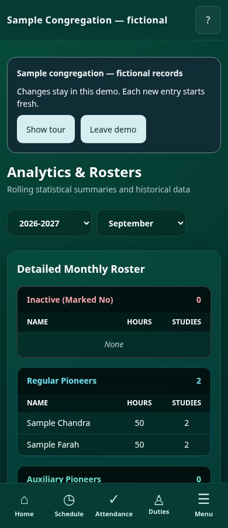
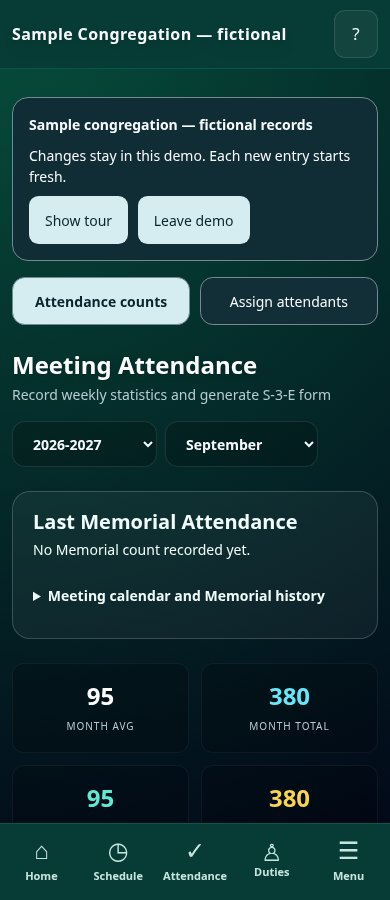
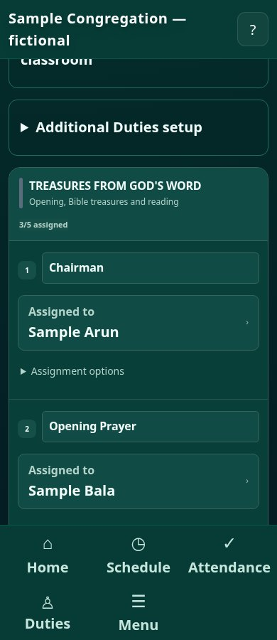
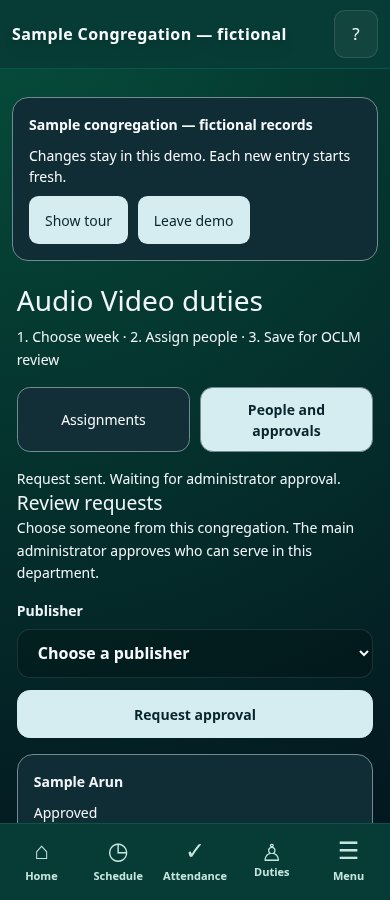
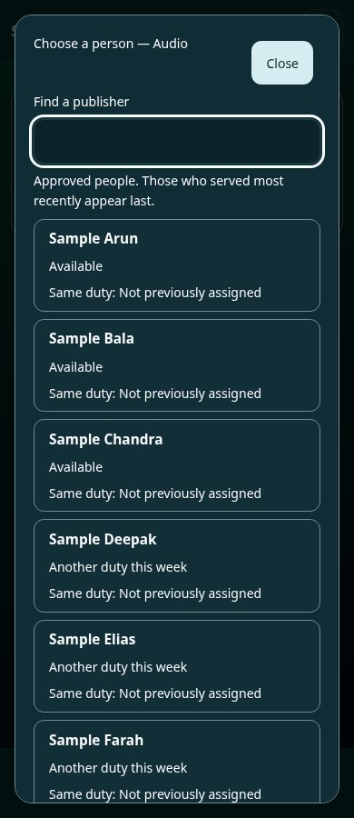
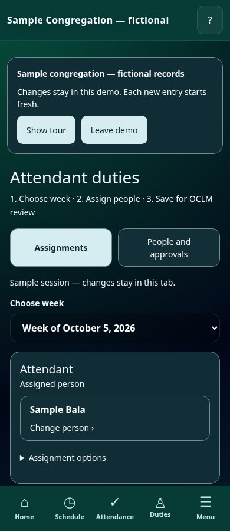
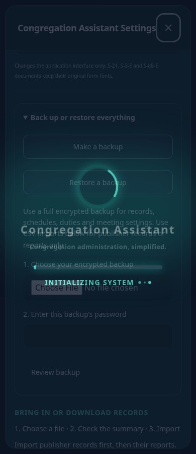
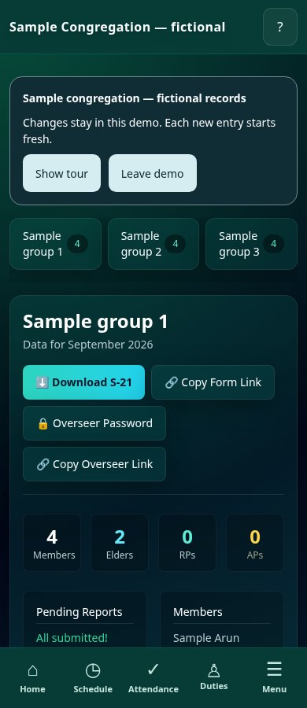
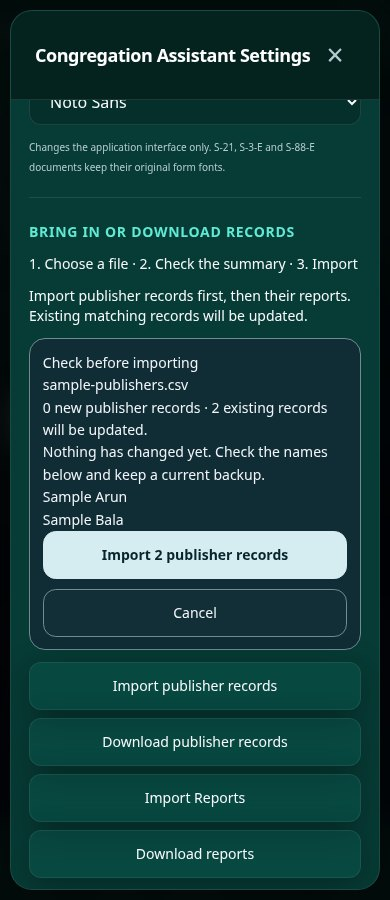

Help, one task at a time
How to use
Congregation Assistant.
Choose a topic below. Follow the steps at your own pace. The website explains the tools; the software is where you do your work.
Get started
A clear first visit
Choose your task. You do not need to learn every screen at once.
Want to explore first? Choose Try the sample congregation on the sign-in screen. Each entry starts with fresh fictional publishers, three groups and reports for two service years. Follow the optional tour. Demo changes stay in that browser tab; no public links, email or push messages are sent.
Request access
On the website, choose Request your trial. Enter your contact details and confirm congregation authorization. Prepare the email draft, then send it yourself. Preparing it alone does not send a request.
Arrange your workspace
The owner reviews your request and arranges the congregation workspace and first administrator. Account creation and activation are coordinated manually.
Sign in
Open the software and choose Continue with Google. Use the email approved by your administrator. Older congregation-password workspaces require separate setup; they are not migrated automatically.
Find your task
Use the desktop navigation or the mobile Menu. Available sections depend on your role. Appearance and notification settings are in the menu.
Finish safely
Look for a saved confirmation. Use Sign out, confirm it, and check that the sign-in screen returns on a shared device.
Publishers
Keep people and groups organized
Start with one correct record, then build the rest.

Open Publishers
Check that you are in the correct congregation. Search for the person before adding a record to avoid duplicates.
Add or edit a person
Enter the necessary details carefully. Check names, groups, and household/contact information before saving.
Check the save
Wait for confirmation. If saving fails, keep the form open, read the error, and retry after checking your connection.
Review groups and contacts
Use the permitted group and emergency-directory tools to review records. Keep sensitive details limited to authorized users.
Use imports carefully
Export a supported sample first and follow its column format. Keep a backup before importing; review the results afterwards.
Reports & PDFs
Review reports before printing
Make sure the reporting month is correct.

Choose the period
Open your Field Service tools and check the service year and month before entering or reviewing reports.
Enter and review reports
Use the approved entry screen or a scoped public report link supplied by the administrator. Check the publisher and period before saving.
Follow up on missing entries
Review the pending-report list. Contact the appropriate person through your congregation’s usual process.
Download the right PDF
S-21 is available for publisher records. Attendance tools provide S-3 and S-88. Open the downloaded file and check the names, dates, totals, and page layout.
Print a sample
Check paper size and print scaling before producing multiple copies. Long remarks may continue onto another page.
Attendance
Enter counts without losing your place
A quick routine for each meeting.

Open Attendance
Open Attendance counts to record meeting totals. Use the separate Assign attendants tab for Attendant duties. In Meeting calendar and Memorial history, set your timezone and meeting days once. Add special dates when needed.
Enter the count
Open the protected attendance link from your overseer. The server fixes today’s meeting date, meeting type, week, month and service year; only the count is editable. Service years run from September to August. Check the count before saving.
Save and confirm
Wait for confirmation. If a save fails, keep the entered values and retry. Switching tabs keeps attendance drafts for that congregation and reporting month.
Review the month
Circuit assembly and regional convention dates have no attendance entry. Memorial counts are stored separately with their date and service year, shown as Last Memorial Attendance and retained in history. They do not enter the regular meeting averages. Authorised staff can correct older counts in the protected dashboard; the public form accepts today only.
Download S-3 or S-88
Review the downloaded report before printing or sharing it with authorized recipients.
Midweek / OCLM
Schedule → review → publish
Draft changes are separate from the shared schedule.

Plan three weeks ahead
Use Plan the week three weeks ahead to open the preparation target, and set an OCLM reminder in My reminders. Aim to assign, review and publish at least three weeks before that meeting week. Use the week arrows or This week. Confirm the displayed date before assigning parts.
Set up People
People syncs from the congregation’s publisher records. Open a person’s settings to check qualifications and enter away periods. An unchecked qualification overrides appointment defaults. People away during that meeting week are excluded from suggestions. Review every suggested assignment.
Set Additional Duties
Open Duties in mobile navigation, or Attendant, Audio Video or Cleaning on desktop. Each department sets its own duty names and number of people. Request a publisher from this congregation. The main administrator approves eligibility before that publisher appears in the assignment chooser. Save assignments online; they appear at the bottom of the shared OCLM draft. The OCLM overseer reviews and publishes them together with meeting parts. Existing custom duties and published weeks are preserved.
Set meeting details
Open Meeting details in Schedule. Set the meeting time, weekly reading and songs. Enable the auxiliary classroom if needed, then assign its counselor and student parts. Review & publish follows the S-140 section order and numbered parts. This is a reference-based layout, not an exact Word-template export.
Assign and edit parts
Choose a person for each part. Long names use the full card width. Open Assignment options only when you need to change status or remove an assignment. Suggestions consider qualifications, away periods, last time doing the same part and other assignments. Review suggestions before publishing. Department-owned duties are edited in their own department workspace.
Review the schedule
Open Review & publish. Check names, assistants, repeated assignments, and part titles against the workbook supplied to your congregation. Weeks outside the loaded library need manual checking.
Publish a real schedule
An approved administrator or OCLM account publishes after cloud setup. Copy or open the live link. Later published changes update the same link; editing a draft alone does not.
Try the demo
In Demo Congregation, Try publishing simulates publication only on this device. It needs no publishing authorization and creates no public link. Reset demo restores fictional people and clears demo assignments.
Import a reviewed month
Open Reviewed monthly program import and choose a JSON file you are allowed to use. Check each week, part type, title and duration in the confirmation. Part counts can vary. Local title changes stay in the draft. The software does not scrape workbook text.
Record what actually happened
Assignment status starts as Scheduled. Mark Completed only when the part was given, or Cancelled when it was cancelled. Reassign by choosing the replacement person. A past date does not prove completion.
Recover a published version
In Review & publish, open Publication history and recovery. View versions, choose the version to restore, and confirm. The live schedule changes; the shared draft stays available for review.
Additional Duties
One department, one clear job
Departments assign their own responsibilities. The OCLM overseer publishes the complete week.
1. Get the correct access
The main administrator adds your Google email in Access & Roles. Choose Audio Video overseer or Attendant duties overseer. Attendance overseer includes counts and Attendant duties. Sign in with that approved Google account.
2. Set up duties once
Open Duties → Audio Video or Attendant. Open Set up duties. Add names such as Audio, Video, Platform, Microphones, Entrance or Seating. Choose how many people are needed. Congregations can use their own names.
3. Request eligible people
Open Approved people. Choose a publisher from this congregation and select Request approval. The request shows Waiting for administrator. The main administrator opens People and approvals and selects Approve or Decline. Approving a publisher for duties does not give that publisher an overseer account.

Administrator view: approve eligibility here. Open full-size example ↗Example only — fictional records. 4. Choose week and assign
Return to Assignments. Choose the week, then choose a person for each duty. Only approved people appear. Search by name. People who served most recently appear last; unavailable people cannot be selected. Another-duty warnings help you check conflicts.

Choose a person: full names and last-time history stay visible. Open full-size example ↗Example only — fictional records. 5. Save for review
Select Save assignments and wait for Saved online. The names join Additional Duties at the bottom of OCLM. The OCLM overseer opens Review & publish, checks the complete week, publishes and checks the live link. Department saving alone does not publish.

Attendant has its own assignment workspace. Open full-size example ↗Example only — fictional records.
Sharing & privacy
Share only what is intended
A link can be forwarded. Treat it with care.
Choose the right link
A schedule link displays published names and assignments. Report and attendance links have separate purposes and should be given only to their intended recipients.
Check before sharing
Open the link yourself and confirm the congregation, schedule, and period. Share the new stable schedule link rather than an older encoded snapshot link.
Update deliberately
Review and publish again when changing a real schedule. The same stable link then shows the new publication. Public pages refresh periodically and when reopened.
Manage account access
In the secure workspace, the administrator uses Access & Roles to approve email accounts and assign roles. Give the same email more than one role to show those sections in one login. An optional section assistant has the same section tools and cannot manage access. Remove access when duties change.
Keep claims precise
The secure backend enforces configured permissions. The legacy backend’s authorization still needs audit; do not treat hidden buttons as proof that data is protected.
Backups & recovery
Keep a usable copy of your work
Exports and full database backups serve different purposes.

Export supported records
Use the available contact and report exports. Label the files with the congregation and date, and store them somewhere private.
Check your copy
Open the exported file and confirm that it contains the expected records. A file that downloaded is not automatically a complete backup.
Protect local drafts
“Saved on this device” is a recovery copy. “Saved online” is the shared draft. “Published” is what the live link shows. These are different stages. If another device has changed the shared draft, download your recovery copy before choosing Load shared draft.
Recover a failed save
Keep the screen open. For midweek storage failures, use Retry save. For cloud errors, check the connection and retry; the error message indicates that the operation did not finish.
Confirm full recovery
Main administrator opens Settings → Back up or restore everything. To make a backup, choose a separate password of at least 12 characters and select Download encrypted backup. Keep the file and password separately. To restore, select Restore a backup, choose the file, enter its password and select Review backup. Read the record counts. Select Download safety backup and restore, check that the safety file downloaded, then confirm replacement. Records, schedules, department duties and eligibility approvals, qualifications and meeting settings are restored. Current account grants, billing and live-link tokens stay in place. Select Reload restored workspace when success is shown.
Roles & access
The right tools for each responsibility
One account can have more than one role when duties overlap.
Main admin / Secretary
Manages congregation records, reports, attendance, scheduling and approved account access. Only grant this role to the person responsible for the whole workspace.
Group overseer
In the secure workspace, the administrator assigns an exact group name. This account sees that group’s members and reports in My group, and can create its group report form link. It can use Bulk entry to enter reports for its assigned group. It cannot edit publisher profiles, change access, or read other groups or congregation totals.
OCLM overseer
Uses scheduling, meeting people, review, publishing and Cleaning duties. Attendant and Audio Video assignments join the same shared schedule. This role cannot approve department eligibility or read field service reports and contact records.
Attendance overseer
Uses attendance counts, calendar, attendance links, S-3 and S-88, plus the separate Attendant assignment workspace. An Attendant duties overseer role can be granted for assignment work without attendance-count access. Neither role grants publisher reports or private contact records.
Audio Video overseer
Sets Audio Video duty names and assigns administrator-approved people. Sees congregation names for eligibility requests, not publisher contacts or field service reports. Only a main administrator can approve eligibility or grant Google-account roles.
Field Service
Uses publisher records, groups and service report tools. This is congregation-wide report access, different from the limited Group overseer role.
Assign or change access
Main admin opens Access & Roles and adds the approved Google email and role. For a Group overseer, enter the exact group name. For an ordinary publisher, choose the person’s publisher record. Their Home shows My next assignment, the report for its named month and Latest notices. Multiple roles combine after one login. Remove the old grant when duties change. Users sign in with their approved account; a changed role is checked again on sign-in.
Groups
Follow up within your group
Check the reporting month before following up.

Choose your group view
A Group overseer opens My group. The view shows only the assigned group and the previous reporting month. Main admin and Field Service use Groups for congregation-wide work.
Review members and reports
Check the member list and the pending reports. Missing entries appear as pending; they are not assumed to be zero reports.
Copy the right form link
Use Copy group report form link for your assigned group. Open it yourself and check the congregation and group before sharing it.
Share deliberately
Send the link yourself using your usual approved method. Reminder settings never send a message or link automatically.
Set a report reminder
Open My reminders. Enable service reports and the report form link reminder, both on the 1st, and choose the time you want.
Reminders
Remember the work at the right time
Choose reminders only for the tools assigned to you.
Open My reminders
Use Menu → My reminders on mobile, or My reminders in the desktop navigation. Your role determines which reminders appear.
Set your days and times
Enable Remind me and choose the time. Attendance and attendance-form sharing use your chosen weekly days. Service reports and report-form sharing repeat on the 1st for the previous month. OCLM reminds you weekly to plan three weeks ahead.
Save your choices
Choose Save reminder times and check the saved message and next reminder times. These settings belong to this account and congregation on this device; they do not sync between devices.
Enable device alerts
Choose Device notification settings, then Enable notifications and Send test notification. A test checks permission only. App reminders are checked while you are signed in and the app is open; denied alerts still leave due reminders visible.
Use a calendar when the app is closed
Save first, then choose Download calendar reminders. Import the .ics file in your calendar and check its notification settings. For Google Calendar, import the file from Settings → Import & export on desktop; confirm the imported events and reminders. Other calendars use their Import or Add calendar event option.
Act on the reminder
Open My reminders → Due now → Open task. Check and complete the work, then choose Done for this reminder. Marking it done does not save an attendance count or publish a schedule.
Change or stop reminders
Disable a reminder and save to stop its app alerts. For imported calendar alerts, edit or delete the calendar events separately. Before importing changed times, remove older CA reminders to avoid duplicates.
Install the app
Use your browser, or a home-screen icon
Currently available through the web browser on phones, tablets and computers. No installation is required. Dedicated Android and iOS apps are planned for later. Optional browser shortcuts open the same software and account.
Try the browser first
Open Congregation Assistant in a modern browser. There is no app-store download needed.
Android
Open the software and choose Menu → Install app. If a prompt is available, confirm it. Otherwise use Chrome’s browser menu → Install app or Add to Home screen.
iPhone or iPad
Open the software in Safari, tap Share, then Add to Home Screen. Launch it from the new icon. Device notification support needs iOS/iPadOS 16.4 or later and the installed app.
Desktop
Use Install app in the software or the install icon in Chrome or Edge’s address bar. If unavailable, continue in the browser.
Check the basics
Sign in from the installed icon, open your assigned section, and test a save with sample information. Use My reminders to set personal times and notification permission.
Know what needs internet
Cloud records, account verification and publishing need an internet connection. An installed app does not make private cloud records fully available offline. Clearing browser/site data can remove local drafts and reminder settings.
Emergency contacts
Find the right contact quickly
Available to the main administrator.
Check authorization
Use Emergency Contacts only for authorized congregation responsibilities. Other limited roles do not receive this directory.
Keep details current
Open the publisher record and check the emergency contact’s name, relationship and phone number with the appropriate person.
Review households
Check names and family groupings before using the printable emergency directory.
Print only when needed
Use the directory’s PDF option, review the file, and keep paper or digital copies with authorized recipients.
Imports & exports
Move supported records carefully
A useful export is a copy you have checked.

Keep a copy first
Make an encrypted backup before replacing existing records. CSV imports add or update matching records; they are not a full workspace restore.
Follow the sample format
In Settings → Bring in or download records, choose Import publisher records or Import Reports. Use the supported CSV column headings. Import publisher records first, then reports. Source publisher IDs from that successful import can be matched when you import reports in the same session.
Check the reporting period
Read Check before importing. It shows new records, existing records that will be updated, unmatched report rows and example names. Check the month and service year. Nothing changes before you select the final Import button. Cancel if the summary is wrong.
Confirm the result
Select the Import button once. Wait for Imported successfully. If saving fails, the file stays ready for retry and the local records are preserved. Check your connection and try again.
Open your exports
Check contact and report exports after downloading. PDF reports should also be reviewed before printing.
Settings & help
Make the screen comfortable
Choose an appearance you can read easily.
Open Settings & Appearance
Use More → Settings & Appearance. Choose a comfortable theme and font. Enable Larger text and controls if reading is difficult. Browser zoom is also supported.
Read announcements
Open Announcements to read notices placed in the congregation workspace. These notices are separate from your personal scheduled reminders.
Find task help
Open How to use in the software. It shows guides for your assigned features, plus installation, reminders, privacy and recovery. Read the steps opens the matching website topic.
Get support
Tell your administrator the task, exact error, device and browser. Do not send passwords, private records, or links containing access tokens.
Sign out on shared devices
Use Sign out and confirm it. Check that the login screen returns. Imported calendar reminders must be removed separately if the device is shared.
Google sign-in
One account, your assigned tools
You do not need a separate login for each responsibility.
Get approved
Give your Main Admin / Secretary the exact Google email you will use. The administrator approves that email and assigns your section or sections.
Open the approved workspace
Use the software URL supplied during setup. Continue with Google opens your approved secure workspace. The approved SuperAdmin email also uses that same Google button; it does not need a separate password form. Existing legacy congregation-password workspaces have not been migrated automatically.
Continue with Google
Select Continue with Google and choose the exact approved email. Complete Google’s sign-in on its own screen. A congregation ID identifies the workspace; it is not your Google password.
See your work
Service + OCLM grants show both sections after one login. Attendance can be added as another role. A person with one role sees only that role’s tools. If your account belongs to multiple congregations, choose which one to open.
Add an assistant when needed
Main admin can approve an assistant’s own Google email for a section. Assistants have the same tools within that section and cannot manage account access. Group assistants retain the exact group restriction.
Resolve a denied sign-in
Ask the administrator to check the email, active role grant and congregation status. If Google itself blocks sign-in, ask the setup owner to check its provider settings and any test-user restrictions. Signing in with Google alone does not approve access.
Finish safely
Sign out on a shared device. When responsibilities change, ask the administrator to remove old roles, then sign out and back in to refresh your workspace.
Still stuck?
Tell your administrator what you were trying to do and the exact error message. Include your device and browser. Do not send passwords, private records, or a public link containing access tokens.
Email supportCommon questions